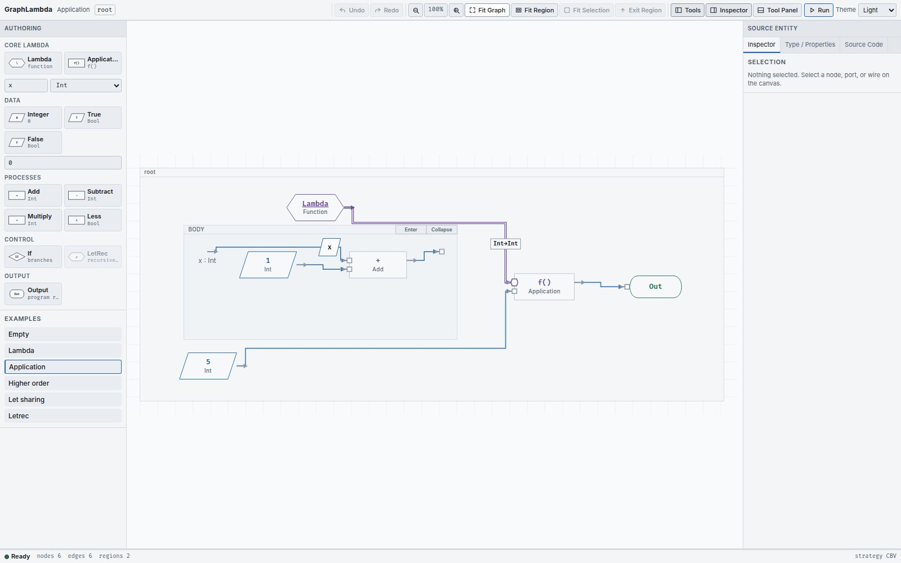

A program graph that stays put
GraphLambda is a statically typed, higher-order visual functional language. Build a program as nodes, typed ports, directed wires and nested regions, then step its machine without rewriting the source graph.
What GraphLambda is
The graph is the program, rather than a diagram reconstructed from a running interpreter. A Lambda owns a body region; a wire carries a value or a reference to a declared binder; one producer can feed several consumers. Execution adds values, focus and source links to that same graph.
The language supports integers, Booleans, functions, application, arithmetic, conditionals, shared computations and explicit recursive functions. Its evaluation strategy is call-by-value . The editor uses native SVG; its nodes are not Blockly blocks.
The workbench


| Area | What to look for |
|---|---|
| Toolbar | History, zoom and fit controls, region breadcrumbs, panel toggles, Run and the Light / Dark / System theme preference. |
| Authoring, on the left | Click or drag a palette item to add a node. Examples include Empty and five complete programs. |
| Canvas, in the middle | The persistent source graph. Nested BODY, THEN, ELSE and LETREC SCOPE regions show ownership and scope. |
| Inspector, on the right | Inspector, Type / Properties and Source Code tabs. Select a source entity to inspect it or edit supported properties. |
| Tool Panel, below | Console diagnostics and the source-anchored Debugger. Starting a run opens the debugger. |
What stays fixed during a run
A run keeps its source graph fixed. Machine state changes, values appear on wires and a dashed outline follows execution, but nodes and edges are not substituted away. Structural editing and Undo / Redo are locked until Close Run . You can still move a node, navigate into a region and change the camera.
A solid selection stroke identifies your selection; a dashed stroke identifies machine focus; corner brackets, a dotted ring or a dotted trace identify a selected provenance anchor. Colour supplements those shapes.
Five examples and an empty canvas
| Starting point | What it demonstrates | Result |
|---|---|---|
| Empty | A root region with no program. Build with the palette. | Run disabled |
| Lambda | A function with one parameter and a body. | A closure |
| Application | Apply the increment function to 5. | 6 |
| Higher order | Pass increment as a function argument, then apply it to 10. | 11 |
| Let sharing | Compute 10 + 20 once; feed its value into both inputs of Multiply. | 900 |
| Letrec | Factorial with an explicit recursive binder. | 120 |
Start with Application , then compare Let sharing and Letrec . Choosing a different example replaces the displayed document; copy any textual work you want to keep before switching.